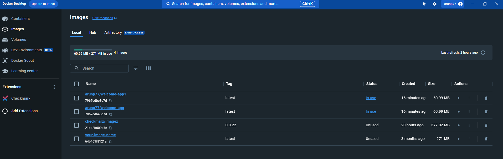
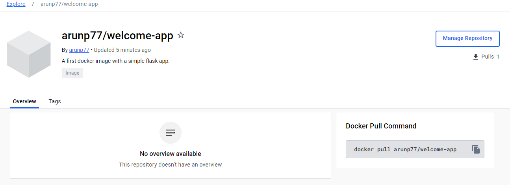

Docker is a software platform that enables developers to build, package, and run applications in lightweight, portable containers. It provides
a standardized environment for developing, deploying, and managing applications across different computing environments.
What is Docker?
Before we dive into the installation and setup, let's briefly explore what Docker is and why it has become a cornerstone of modern software development and deployment.
Docker is an open-source platform designed to automate the deployment, scaling, and management of applications within lightweight, portable, and self-sufficient containers.
These containers encapsulate everything an application needs to run, including code, libraries, dependencies, and runtime environments. Unlike traditional
virtual machines, Docker containers share the host OS kernel, which makes them extremely efficient and fast to start.
Docker provides an environment that enables developers to build, test, deploy, and run applications by using containerization technology.
The key benefits of Docker include:
Isolation: Containers run in isolated environments, ensuring that applications don't interfere with each other.
Consistency: Docker ensures that an application behaves the same way in development, testing, and production environments.
Portability: Containers can run on any system that supports Docker, making it easy to move applications between different environments.
Scalability: Dock
Virtual Machines Overview
Virtual machines (VMs) are software-based emulations of physical computers. They allow the simultaneous
operation of multiple operating systems on a single physical machine, optimizing hardware resources.
Key Points:
VMs are managed by a hypervisor, facilitating the creation and control of virtualized environments.
Isolation is ensured, as each VM operates independently with its own virtualized hardware resources.
VMs support various guest operating systems, enabling diverse software environments on the same hardware.
Resource allocation by the hypervisor optimizes hardware use, allowing multiple VMs on a single server.
Virtual machines find applications in data centers for server consolidation, testing, development, and more.
They offer flexibility, allowing easy migration between physical servers and efficient resource management.
Popular virtualization platforms include VMware, Microsoft Hyper-V, and open-source solutions like KVM.
Containerization:
Concept: Containerization is a lightweight form of virtualization that allows you to package and run applications and their dependencies in isolated units called containers.
Key Points:
Containers encapsulate an application and its dependencies, ensuring consistency across different environments
They provide a standardized and efficient way to deploy, distribute, and manage applications.
Hypervisor: A hypervisor, also known as a Virtual Machine Monitor (VMM), is a software or firmware that enables the creation and management of virtual machines (VMs) on a
physical host machine. It allows multiple operating systems to run concurrently on a single hardware platform. Hypervisors play a crucial role in virtualization technology, facilitating the
isolation and efficient allocation of resources for different virtualized environments. They are commonly used in cloud computing, server consolidation, and other scenarios where maximizing
hardware utilization and flexibility are key objectives.
In summary, the hypervisor is the layer that enables the creation and management of virtual machines on a physical host. VMs are the instances of virtualized operating systems and applications
that run on top of the hypervisor. The hypervisor provides the abstraction and control necessary to efficiently share and allocate resources among multiple VMs.
Difference between the Virtual machines and Dockerr
Aspect
Docker Containers
Virtual Machines
Resource Utilization
Containers have faster startup times and consume fewer resources.
VMs require more resources due to the overhead of running multiple OS instances
Isolation
Containers share the OS kernel but are isolated from each other.
VMs provide stronger isolation as they run separate OS instances.
OS Dependency
Containers share the host OS kernel, making them more lightweight than VMs.
VMs include a full OS for each instance, leading to higher resource overhead.
Portability
Containers ensure consistent behavior across different environments, promoting portability.
VMs may face compatibility issues when moved between different hypervisors.
Common Use Cases of Docker:
Microservices Architectures: Docker is widely used for implementing microservices architectures, where applications are broken down into smaller, independent services.
It is mostly used in Deploying Microservices Architecture in Cloud Environments (AWS, Azure).
Continuous Integration and Continuous Delivery (CI/CD): Docker is integrated into CI/CD pipelines to automate application builds, deployments, and testing.
Web Application Development: Docker is a popular choice for developing and deploying web applications, providing a consistent and portable environment.
Legacy Application Modernization: Docker can be used to modernize legacy applications by packaging them into containers and running them in a modern environment.
DevOps Practices: Docker plays a crucial role in DevOps practices, enabling rapid application development, testing, and deployment cycles.
Learn Docker: A Step-by-Step Guide
Start by visiting the Docker desktop download page to acquire the latest version compatible with your operating system, whether it's Windows, Linux, or macOS.
Download the installer provided on the Docker Desktop download page and execute it. Follow the on-screen instructions to complete the installation process. It's a straightforward process, and the installer will guide you through the necessary steps.
After the installation is complete, you can find Docker Desktop by searching for "docker" in your system's search bar. Launch Docker Desktop, and it will run on your local machine.
To fully utilize Docker's capabilities, consider creating an account on docker hub. This step is optional but recommended, as it allows you to manage and view the repositories associated with your Docker images on Docker Hub.
Now create a project and hence image and push it to docker repository.
Simple Flask application
Step-1:Create a simple Flask application. For example, create a file named app.py with the following content:
## flask app for hello world
from flask import Flask
import os
app = Flask(__name__)
@app.route('/', methods=['GET'])
def home():
return "Hello world! This is arun."
if __name__ == "__main__":
app.run(debug=True, host="0.0.0.0", port="5000")
Step-2:Create a file named requirements.txt with the following content:
Flask == 2.0.1
This file specifies the dependencies for your Flask app.
Step-3:Create a file named Dockerfile with the following content:
FROM python:3.8-alpine
COPY . /app
WORKDIR /app
RUN pip install -r requirements.txt
CMD python app.py
This Dockerfile specifies how to build your Docker image.
Step-4:Open a terminal, navigate to the directory containing your Dockerfile, app.py, and requirements.txt, and run the following command:
$ docker build -t my-flask-app .

Here you will find all available images that you have created along with the image just you created.
Step-5:
After building the Docker image, you can run a container using the following command:
$ docker run -p 5000:5000 my-flask-app
This command runs the Docker container and maps port 5000 from the container to port 5000 on your host machine.
Step-6:Open a web browser and go to http://localhost:5000. You should see the message "Hello, world!".
Once you have already created the docker image, you should push it to docker hub.
$ docker push dockerusername/welcome-app:latest
replace 'dockerusername' with your actual docker username. The pushed repostory can be seen in your dockerhub as follows:

Reference
For a best description of docker basics, you can look at youtube video: Youtube video.